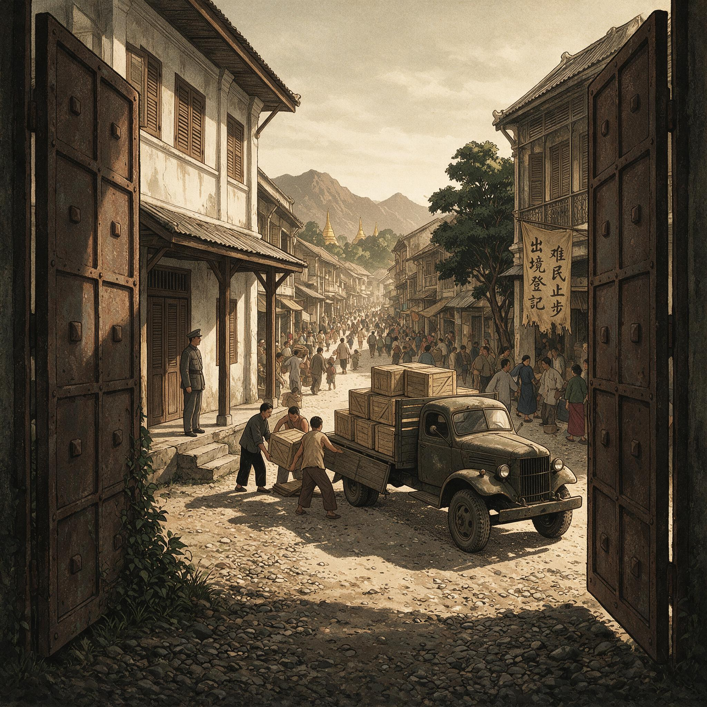

第 23 章
泰缅边境的无岸岁月
泰缅边境山区的雨季通常在五月到来。1950年的雨季来得格外早，四月底就开始下雨，一连下了十七天。在掸邦高原深处的孟帕辽，一个名叫马老四的前远征军上士蹲在竹棚屋檐下，看着雨水把院子里

加尔各答留守处关闭的瞬间
AI 生成插图，非史实影像。
晾晒的旱稻冲得七零八落。
他手里捏着一张纸——那是一份缅甸联邦政府通过掸邦地方官员下发的通告，要求所有外国武装人员在六十天内向当局登记身份。马老四不识字。他把这张纸翻来覆去看了好几遍，只认得上面盖的那个圆章。圆章意味着官方，官方意味着麻烦。他把纸折好塞进上衣口袋，那件上衣曾经是一件军装，但现在已经看不出原来的颜色了。袖口的缝线断过三次，他用钓鱼线重新缝上，针脚歪歪扭扭，像一条蜈蚣趴在布面上。
同一份通告在同一时间，被送到了孟延、孟萨、以及沿萨尔温江东岸分布的十几个中国武装人员聚居点。在其中的大多数地方，这份通告引发了相似的困惑：登记身份——什么身份？用什么来登记？马老四翻遍了自己的全部家当。
一个竹编背篓，两套换洗衣服，一把砍刀，三块打火石，半袋旱稻种子，以及一个用油布包裹的小包。小包里装着他的全部证件：一张1942年在昆明发的入伍登记表，纸张已经发黄发脆，折叠处裂开了两道口子；一张1944年在兰姆伽发的津贴领取卡，上面的墨迹被汗水浸得模糊不清，只能勉强辨认出“新编第二十二师”几个字；还有一张手写的行军命令残片，日期是1945年3月，内容是命令某营向腊戍方向推进，但纸的下半截已经被撕掉了，命令的签发人是谁、具体发给哪个连队，都无从查证。
这些东西在法律上没有任何效力。马老四自己也知道这一点。去年有一个缅甸地方官员路过这里，看过他的证件之后，用一种困惑的表情问他：这些东西上面既没有照片，也没有钢印，我怎么知道它们是你的？马老四当时回答不上来。他只知道这些东西是他的，因为他已经带着它们走了几千公里路，从云南走到缅甸，从缅甸走到印度，又从印度走回缅甸。但这显然不是一种能够在行政程序中被承认的证明方式。
问题比马老四个人面临的困境更为根本。在整个泰缅边境地区，散落着数以千计的中国前军事人员，他们中的绝大多数人最后一次持有正式军人证件是在1942年或1944年。此后数年间，建制被打散，番号被撤销，长官或阵亡或调离，档案或焚于战火或遗失在撤退途中。他们能够证明自己“曾经是中国军人”的唯一凭据，是身上那套早已褪色磨损的军装，以及口袋里几张皱巴巴的纸张——有的是早已失效的津贴领取单，有的是手写的行军命令残片，有的甚至只是同袍之间互留的地址条。
而1949年之后，连这套本就脆弱的证明体系也彻底失效了。新中国的成立意味着中国军队建制体系发生了根本性更替。在解放军的序列里，从来没有过这些人的名字。他们的番号——新编第二十二师、新编第三十八师、第二百师——属于一个已经被推翻的政权，属于一支已经被改编或撤销的军队。北京方面在涉及境外滞留人员的问题上态度明确：这些人是旧政权的残余武装，不属于中国人民解放军序列，中国政府不对其行为承担任何责任。
退守台湾的国民党政权虽然在法理上承认这些人的存在，但这种承认几乎无法转化为任何实际救济。台北在曼谷设有“使馆”，但其外交承认范围正在迅速萎缩，在缅甸的影响力也是微乎其微。1951年，台北曾试图将泰缅边境的滞留武装人员纳入“反攻大陆”的军事计划，派出联络官进入山区进行整编动员。但真正愿意响应的人并不多。大多数滞留者已经在这片山区生活了数年甚至十余年，他们更关心的是明年的收成和雨季的疟疾，而不是那些遥远的政治口号。
于是出现了一个奇特的法律真空：数千名中国军事人员滞留在缅甸和泰国境内，但没有任何一个主权国家愿意或能够为他们的身份提供官方背书。他们在事实上存在，却在行政意义上不存在。他们是活着的、呼吸着的、每天需要吃饭睡觉的具体的人，但在所有官方记录中，他们要么被归类为“国民党残部”——一个笼统而充满政治意味的标签，要么被归类为“中国难民”——一个同样笼统但至少不涉及军事属性的标签，要么干脆被忽略不计。这种状态并非一夜之间形成的。
它是多个历史进程在同一时刻交汇的结果：中国内战结束、政权更替、冷战格局在东南亚的扩展、缅甸独立后的边境治理、泰国对境内华人武装的矛盾政策。每一个进程都有其自身的逻辑和动力，但当它们叠加在一起时，产生了一个任何单一进程都无法解释、任何单一政府都不愿负责的后果：一批在境外滞留了十年以上的中国士兵，被同时隔绝于两个现代国家体系之外。
1951年，缅甸政府曾通过外交渠道向北京方面探询，是否有意接收这批滞留人员。北京方面的答复是明确的：这些人是“国民党残余武装”，不属于中国人民解放军序列。同一年，缅甸方面也向台北进行了类似的探询。台北表示愿意接收，但提出了一个缅甸政府无法接受的条件：要求缅甸允许国民党军队借道缅北进攻云南。这个条件被拒绝后，台北方面的接收承诺也就不了了之。1952年雨季，克钦邦地方官员罗兴汉在巡视辖区时，记录下了他所见到的中国武装人员聚居点的状况。
这份后来被收入缅甸内政部档案的报告描述道：“这些人大多居住在竹棚或茅草屋中，部分人与当地妇女结婚，育有子女。他们开垦山地种植旱稻和玉米，有时受雇于附近村寨从事伐木或搬运工作。少数人仍保留着锈蚀的步枪和少量弹药，但多数武器已无法使用。他们的首领自称‘连长’或‘营长’，但这些番号已无实际意义。”
这份报告的措辞是冷静而客观的，但从中可以读出某种深刻的荒诞性。那些在1942年穿越野人山、在1944年攻克密支那、在1945年打通滇缅公路的中国士兵，如今被描述为“开垦山地种植旱稻”的流民。他们的军事身份正在被时间缓慢地抹去，而这个过程并非始于任何正式的命令或决定——它只是自然而然地发生了，就像雨季的雨水冲刷掉旗帜上的颜色。
但抹去并不等于消失。在掸邦和克钦邦交界的山区，这些前远征军人员仍然维持着某种松散的内部组织。他们之间通过一套复杂的口头传统来维系记忆：谁在哪一年入伍，谁在哪一仗受过伤，谁曾经是哪个团哪个营的人。这些信息没有被系统地记录下来，但它们在夜晚的火堆旁被反复讲述，在一杯劣质米酒下肚后被再次确认。对于那些已经失去了一切书面证明的人来说，同袍的记忆就是他们身份的最后凭证。
然而这种口头凭证的可靠性正在逐年下降。到1953年，距离第一次入缅作战已经过去了十一年。
记忆开始出现偏差，一些人把不同年份的事情混在一起，另一些人则出于各种原因修改了自己的经历。更麻烦的是，随着老兵的死亡和离散，能够互相作证的人越来越少。当一个聚居点里只剩下三五个人时，谁来证明他们曾经属于同一支部队？
马老四所在的孟帕辽聚居点，到1953年时只剩下十一个人。其中有三个人声称自己曾经在仁安羌打过仗，但他们描述的仁安羌截然不同：一个人说那一仗是在平原上打的，另一个人说是在河边上打的，第三个人则坚持说主战场是一座寺庙周围。他们为此争吵过不止一次，每次争吵都以沉默收场——因为他们突然意识到，除了彼此之间这些越来越不可靠的记忆之外，没有任何东西能够证明那一仗确实发生过，更没有任何东西能够证明他们确实在那里。
泰国北部的清莱府，1953年旱季。一个名叫美斯乐的山区村落开始引起曼谷方面的注意。这个村落位于泰缅边境的山区，海拔约一千二百米，气候凉爽，适宜种植茶叶。村落的居民几乎全是华人，其中相当一部分是前中国远征军人员及其家属。
他们是在1949年至1950年间，从云南方向陆续进入泰境的。美斯乐的形成过程本身就是一个漫长的漂流故事。第一批到达这里的人大约有三百人，其中大部分是原国民党第八军和第二十六军的溃散人员，在1949年年底从滇南越过边境进入缅甸，随后又向西穿越掸邦高原，最终在1950年旱季到达泰北山区。
在这个过程中，他们遇到了更早散落于此的远征军老兵——那些人在1945年战争结束后没有随建制部队回国，而是因为各种原因留在了缅北和泰北：有人是因为伤病无法长途行军，有人是因为在当地娶妻生子不愿离开，有人是因为与所属部队失散后找不到回国的途径，还有人是因为对回国后的前景感到悲观而主动选择了滞留。
这两批人在泰北山区相遇时，彼此之间的差异是明显的。1949年撤退过来的那批人身上还带着内战的硝烟味，他们中的军官仍然保持着较为完整的指挥体系，士兵仍然听从长官的命令。
而那些在1945年就散落于此的老兵，则已经在这片山区生活了四五年，他们学会了当地语言，熟悉了地形和气候，与附近村寨建立了贸易关系，有些人甚至已经开垦出了像样的田地。他们看那些新来者的眼神，带着一种过来人的复杂意味——既同情他们的狼狈，又知道他们很快就会经历自己曾经经历的一切。
这种相遇带来的不是简单的合流，而是一种复杂的混编过程。新来者带来了相对完整的军事组织和政治目标——他们中的军官仍然谈论着反攻、整编、与台北的联系；而老滞留者则带来了在地化的生存智慧——他们知道哪里的土地适合耕种，哪里的水源在旱季不会干涸，哪里的边贸集市可以用茶叶换取盐巴和药品。这两种逻辑在随后的几年里不断碰撞和融合，最终形成了一种奇特的共生状态：美斯乐既是一个军事滞留点，又是一个边境农耕村落；居民们既保留着军队的番号和等级，又按照农民的方式安排生产和生活。泰国政府对这批人的态度是矛盾的。
一方面，他们构成了边境地区的不稳定因素——这些人受过军事训练，部分人持有武器，与缅甸境内的同类团体保持着联系。另一方面，他们在山区开垦荒地、种植经济作物，实际上帮助泰国开发了那些长期处于政府控制之外的边远地带。更重要的是，在冷战背景下，这些反共的中国武装人员可以被视为对抗共产主义势力扩张的潜在缓冲力量——1953年，越盟在老挝的军事活动已经引起曼谷的警觉，泰国军方中的一些人开始考虑，是否可以利用泰北的华人武装作为边境防线的一部分。
这种矛盾态度导致了政策的摇摆。1953年，泰国当局曾一度要求美斯乐的华人居民进行登记，并威胁将无证者驱逐出境。但当这个命令真正要执行时，执行者发现了一个棘手的问题：如果要把这些人驱逐出境，那么应该把他们驱逐到哪里去？中国大陆不会接收他们。台湾没有能力接收他们——即使台北愿意，将这些人员从泰北山区运送到台湾也需要一笔巨大的经费和复杂的后勤安排，而这些条件在当时都不具备。
缅甸已经明确表示拒绝接收更多中国武装人员——仰光方面在1953年年初的一份外交照会中措辞强硬地指出，缅甸境内已有的中国武装人员已经构成了严重的边境治理问题，缅方不会再接收任何来自泰国的同类人员。他们是真正意义上的无处可去之人。
正是在这个时期，“归途无岸”这个表述开始在老兵群体中流传。它最初可能只是某个人在酒后的一句感叹，但很快就获得了更广泛的共鸣。对于这些人来说，“归途”并不是一个地理概念——他们知道从泰北到云南只有几百公里的山路，走路只需要几个星期。真正的障碍在于，那个他们可以“归”回去的“岸”——一个承认他们、接纳他们、为他们提供法律身份的国家——已经消失了。
1949年之前，这个“岸”虽然遥远而模糊，但至少是存在的。那时他们自己是“中国军队的人”，这个说法虽然不能立刻解决他们的实际困难，但至少提供了一个身份的锚点。1949年之后，连这个锚点也消失了。
“中国军队”本身发生了分裂和更替，他们所属的那一半退到了台湾岛上，而占据大陆的那一半则根本不承认他们与自己有任何关系。他们变成了历史夹层中的人——既不属于胜利者，也不完全属于失败者；既不是战俘，也不是自由人；既不是军人，也不是平民。
1954年日内瓦会议后，印度支那的政治版图发生了重大变化。法国在奠边府战败后退出北越，越南以北纬十七度线为界分裂为两个国家。这个变化对泰缅边境的中国滞留者产生了间接但影响。此前，他们中的一部分人还抱有一线希望，认为国际局势的某种变化可能为他们打开回国之门——比如美国介入台海冲突导致国民党重返大陆，或者中缅边界谈判带来某种身份解决的契机。但日内瓦会议的结果表明，大国之间的博弈不会为这些边缘人群提供任何解决方案。他们的问题太小了，小到不值得被摆上任何一张谈判桌。
1955年，美斯乐的人口已经增长到约三千人。村落有了基本的社会结构：一个由前军官组成的管理委员会负责协调公共事务——修路、分水、调解纠纷；
一所简陋的小学教授华文课程，课本是手抄的，墨水是用木炭和树汁调制的；一座供奉关公的庙宇承担着精神凝聚的功能，庙里的香火钱被用来接济最困难的几户人家。从表面上看，这里已经越来越像一个普通的边境村落，而不是一个军事滞留点。
但那些褪色的军装仍然被小心地保存在竹箱里。一些人在重要场合仍然会穿上它们——过年时、祭祖时、婚丧嫁娶时。不是为了炫耀，而是为了提醒自己和他人，他们曾经是谁。在美斯乐管理委员会的一次会议上，有人提议统一销毁这些旧军装，理由是它们已经破烂不堪、穿着不体面，而且容易引起泰国当局的猜疑。这个提议被否决了。否决的理由没有被记录下来，但所有在场的人都明白：那些军装是他们与过去之间最后的物质联系。如果连这个也丢掉，他们就真的什么都不是了。同年，一份泰国国家情报局的内部报告对美斯乐和其他类似聚居点进行了评估。
这份报告指出，这些华人武装团体虽然在短期内不会对泰国构成直接威胁——他们的人数有限、装备陈旧、缺乏统一指挥、内部派系林立——但其长期存在可能导致复杂的边境治理问题：他们与缅甸境内同类团体的联系可能被缅方视为泰国包庇反缅武装的证据；他们在山区开垦土地可能与当地少数民族发生资源冲突；
他们的政治倾向可能在泰国外交中制造麻烦。报告建议政府采取“逐步同化”政策，通过授予居留权和经济整合，将这些人群吸收进泰国社会。这个建议在政策层面是理性的，但它回避了一个根本问题：那些不愿意被同化的人怎么办？那些仍然坚持自己是中国军人、等待正式遣返的人怎么办？
在美斯乐，有一个前远征军士兵每年旱季都会整理自己的行装，把一套叠得整整齐齐的旧军装放进背包，然后坐在村口的路边等待。有人问他等什么，他说等命令。什么命令？回国的命令。这个命令来自谁？他不知道。但他相信总会有人下达这个命令。他等了十年。在这十年间，他周围的世界发生了无数变化。
曼谷的政变发生过不止一次——銮披汶政府在军事政变中上台又下台；缅甸的边境政策调整过好几轮——仰光方面时而试图收编这些武装团体，时而又对他们发动清剿；北京和台北之间的对峙持续升级——1954年第一次台海危机爆发，1958年第二次台海危机接踵而至；冷战在东南亚投下了越来越长的阴影——美国开始大规模介入越南事务，老挝内战愈演愈烈。
但他等的那个命令从未到来。没有任何一个政府、任何一个组织、任何一个人，会向一个滞留在泰北山区的老上士下达回国命令。他的等待从一开始就是徒劳的。但他不是唯一一个在等待的人。在整个1950年代，散落在泰缅边境各处的远征军老兵，都在以各自的方式等待着一个永远不会到来的结局。一些人把希望寄托在台北的反攻计划上，认为只要国民党军队重返大陆，他们就可以名正言顺地回家了。
这种希望在1950年代初曾经很高——朝鲜战争爆发后，台北方面确实一度认为第三次世界大战即将到来，反攻时机已经成熟——但随着朝鲜停战、日内瓦会议召开、美国明确表示不支持国民党反攻大陆，这种希望逐渐变得微弱而空洞。另一些人则试图通过个人渠道与大陆的家人取得联系，寄出过信件，但几乎没有收到过回音——那些信要么在中途遗失，要么因为收件人害怕政治牵连而被销毁。还有一些人选择了沉默，把等待内化为一种日常状态，就像呼吸一样自然，不再追问它的意义或终点。
1956年，一名英国旅行者途经掸邦北部时，在一个集市上遇到了一名中国小贩。这名小贩售卖的是自制的竹编器具，手艺粗糙，生意清淡。旅行者与他攀谈，发现他能说一些英语——这是在兰姆伽受训时学的。他向旅行者展示了一枚保存在布包里的勋章，上面刻着“陆军新编第二十二师”的字样。他说这是他唯一还能证明自己参加过战争的东西。旅行者问他为什么不回国，他沉默了一会儿，然后用一种平淡的语气说：“没有人要我们。”
这句话的准确程度超出了说话者本人的认知。在行政和法律意义上，“没有人要我们”是一个准确的描述。新中国不承认他们是自己的军队成员。旧政权无力为他们提供有效救济。缅甸和泰国视他们为需要管控的外国武装人员。没有任何一个主权实体愿意站出来说：这些人属于我们，我们对他们负有责任。
这种三不管状态在1957年达到了某种临界点。那一年，缅甸政府军在掸邦发动了一次针对非政府武装的清剿行动——这次行动的目标包括克伦族分离主义武装、掸族地方武装以及多个中国武装人员聚居点。缅甸军方的情报显示，这些中国武装团体中有一部分正在与台北恢复联系，试图在缅北建立反攻基地。
仰光方面对此高度警惕，决定采取先发制人的军事行动。清剿行动持续了大约三个月。多个中国武装人员聚居点受到影响，一些人死亡，一些人被俘后移交给台湾方面处理——台北通过外交渠道进行了交涉，最终接收了约四百名被俘人员——更多的人则向更深的山林转移。
在这个过程中，许多保存了十几年的个人物品被遗弃或损毁：照片、信件、勋章、军装、入伍登记表、行军命令残片。当这些人再次安定下来时，他们与过去之间最后的物质联系已经断裂。正是在这个时期，“远征军老兵”这个身份开始从一种社会事实转变为一种纯粹的个人记忆。
在公共记录中，他们要么被归类为“国民党残部”，要么被归类为“中国难民”，要么干脆被忽略不计。没有人再使用“中国远征军”这个称谓来指称他们，因为那个军队建制本身已经在历史中消失了。番号被撤销，编制被打散，档案被焚毁或封存，连带着那些曾经在这些番号下作战的人，也一同被推进了历史的暗影之中。
但肉身仍在。在泰北的山区村落里，在掸邦的丛林营地中，在克钦邦的边贸集市上，这些人在继续生活。他们种地、做工、做小买卖、养儿育女。他们的孩子说缅语或泰语，偶尔夹杂几个云南方言词汇。他们不再穿军装，因为军装已经烂掉了。他们不再谈论战争，因为听他们讲述的人越来越少。
他们正在变成另一个人——一个普通的边民，一个没有过去的人。1958年，美斯乐的管理委员会做了一件事：他们试图编纂一份村落居民的名册。这个动议的初衷很实际——需要一份名单来向泰国地方政府证明居民的合法性，以便争取更好的待遇，比如正式的居留许可、子女入学资格、医疗资源的分配。
但当执笔人真正坐下来开始记录时，他发现这项工作远比预想的困难。许多人记不清自己入伍的具体日期。“大概是民国三十一年吧”——但民国三十一年是1942年还是1943年？有人说不准自己所属部队的完整番号。
“新编什么师来着？反正是孙立人的部队”——但孙立人指挥过的部队不止一支。还有人连自己原籍村庄的名字都已经模糊了。“云南保山那边的一个村子，叫什么都忘了”——他离开那个村子的时候是二十岁，现在已经四十三岁了。执笔人试图通过交叉询问来核对这些信息：让同一个聚居点的人互相确认彼此的来历。但这种方法很快就暴露出了问题。
一个人说另一个人是某团某营的，但被确认的那个人自己却否认——“我不是那个营的，我是跟那个营一起走的，但我属于师部直属连。”第三个人插话：“不对，你一开始是在团部当传令兵，后来才调到师部的。”三个人各执一词，谁也说服不了谁。
这份名册最终没有完成。它变成了一堆零散的纸片，上面写满了不完整的信息和相互矛盾的陈述。有些纸片上只写了一个名字和半个番号——“张德胜，新三十八师某团”，后面的内容空着。有些纸片上画着问号——“李国栋？李国梁？记不清了”。
有些纸片上干脆什么都没写，只留下执笔人反复涂改的墨迹。这些纸片后来被存放在管理委员会的一间竹棚里。雨季来临时，竹棚漏水，一部分纸片被浸湿，上面的墨迹洇成一团——名字和番号混在一起，再也分不清谁是谁。旱季到来时，白蚁啃食了另一部分——那些纸片上记录的名字和经历变成了白蚁腹中的碎屑。到1960年，这份未完成的名册已经基本损毁。这是一个具有象征意义的细节。
当纸面上的记录全部消失之后，那些人的存在就只剩下血肉之躯的证明。但血肉之躯是会老去和死亡的。如果他们在死亡之前没有得到任何形式的官方承认，那么他们的存在——以及他们所经历的一切——就会随着最后一口气息的消散而彻底湮没。
这就是“无岸”的真正含义。它不是地理上的无法靠岸——从泰北到云南只有几百公里山路，从缅北到滇西更近，走路只需要几个星期。它是时间中的无限漂流。那些在1942年走出国门的中国士兵，在经历了战争、撤退、整训、反攻、胜利和遗忘之后，最终被困在一个没有出口的历史夹层里。
他们不属于任何国家的军队序列，不属于任何政府的责任范围，不属于任何档案的记录对象。他们只是在活着，在边境山区日复一日地活着，等待一个永远不会到来的归途。而那个归途的对岸——那个承认、接纳、为他们正名的国家——从一开始就只存在于他们的想象之中。1959年旱季的一个傍晚，美斯乐村口那个每年整理行装等待命令的老兵，没有像往年一样出现在他的位置上。
邻居去他的住处查看时，发现他已经去世了，安安静静地躺在竹床上，身边放着一个打好的背包和一套叠得整整齐齐的旧军装。背包里除了几件换洗衣物之外，还有一张字条，上面写着他的姓名、籍贯和部队番号。这是他留给自己身份的最后证词。
邻居们把他葬在村后的山坡上，坟前立了一块木板，上面照抄了那张字条的内容。木板在雨季到来之前就被雨水冲得字迹模糊——那些用木炭写下的字迹在雨水中先变成灰色的水渍，然后变成什么也看不清的木纹。到了第二年旱季，已经没有人能辨认那块木板上曾经写过什么。
马老四听说这件事的时候，正在孟帕辽的集市上卖竹编。他听完之后沉默了很久，然后把手里的竹编放下，站起来走回自己的竹棚。他翻出那个油布包裹，把里面的证件一张一张拿出来，在阳光下仔细看了一遍。
入伍登记表。津贴领取卡。行军命令残片。他把这三张纸并排放在膝盖上，坐了很久。然后他把它们收起来，重新用油布包好，放回竹箱里。他没有说什么。但在那天之后，他开始教邻居家的孩子认字。
他用木炭在竹片上写字，一个字一个字地教。他教的第一批字里，有他自己的名字，有他所属部队的番号，有他打过的最重要的那一仗的地名。他不知道自己为什么要这样做。也许他只是觉得，如果有一天他也像美斯乐那个老兵一样无声无息地死去，至少还有一个人能写对他的名字。这个想法本身就是一个反讽。他用了大半辈子在等待一个国家的承认，到头来却只能指望一个邻居家的孩子记住他的名字。而那些散落在更偏远山区的老兵——那些没有邻居、没有孩子、没有任何人知道他们存在的人——连这一点指望都没有。他们的战争已经结束了很久。但他们对抗遗忘的战争，才刚刚开始。